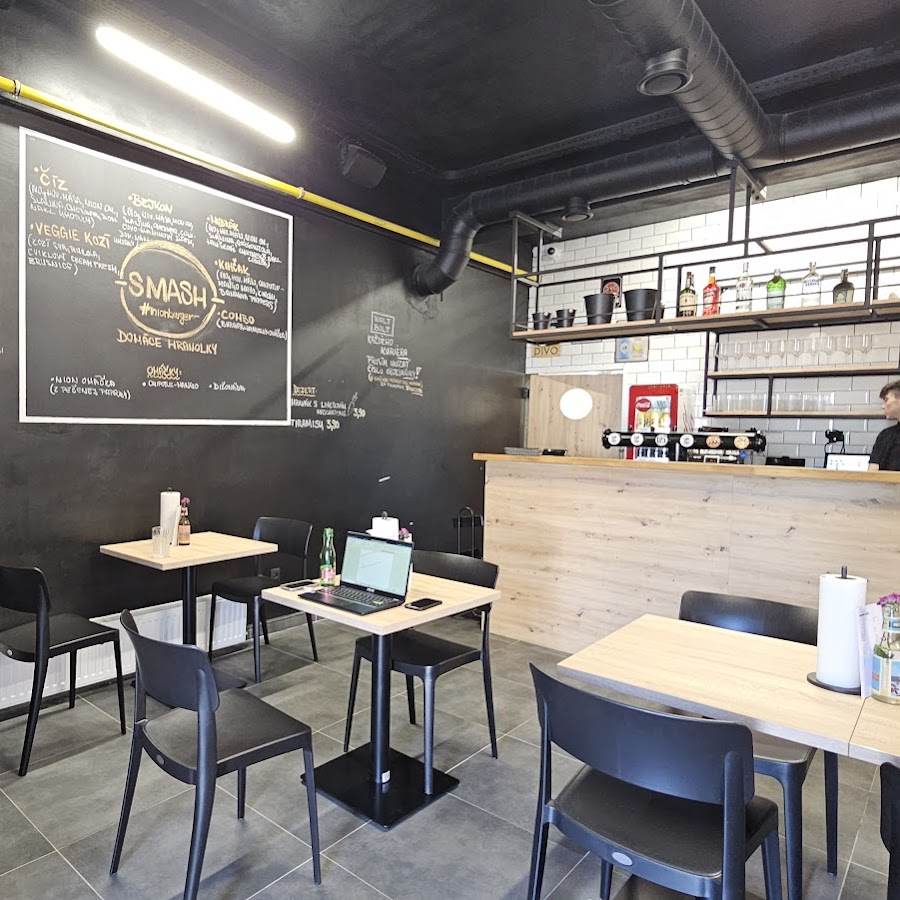

Smash burgre z hovädzieho 170 g a domáce hranolky. Ružinov, Prešovská 38.
4,8 ★ z 490 hodnotení na Google Maps

…presne ako na tabuli, aj s domácimi hranolkami
Hovädzie mäso 170 g, nion omáčka, syr cheddar, slanina, nakladané uhorky
Hovädzie mäso 170 g, nion omáčka, cheddar, slanina, slaninovo-cibuľový džem, nakladané uhorky
Hovädzie mäso 170 g, nion omáčka, slanina, syr gorgonzola, hruškové chutney, červená cibuľa
Hovädzie mäso 170 g, syr cheddar, chipotle-mango omáčka, slanina, kimchi, banana peppers
Kozí syr, rukola, cviklový cream-fresh, brusnice
Burger + domáce hranolky + omáčka podľa výberu
150 g, čerstvo krájané
Z pečenej papriky — podpis podniku
Dve ďalšie domáce omáčky k hranolkám aj burgru
Položky a ceny prevzaté z vašej živej Wolt ponuky (24. 8. 2026) — pred spustením ich zladíme s lístkom v prevádzke.
Prešovská 38, 821 02 Bratislava — Ružinov
Pondelok – nedeľa: 11:00 – 20:00
0905 568 971
Wolt · Bolt Food — alebo osobný odber priamo v prevádzke